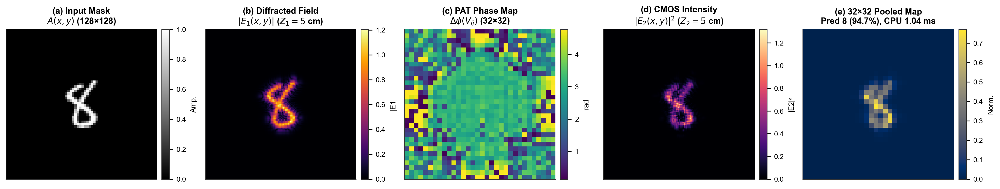
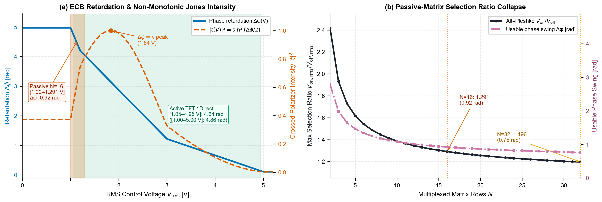
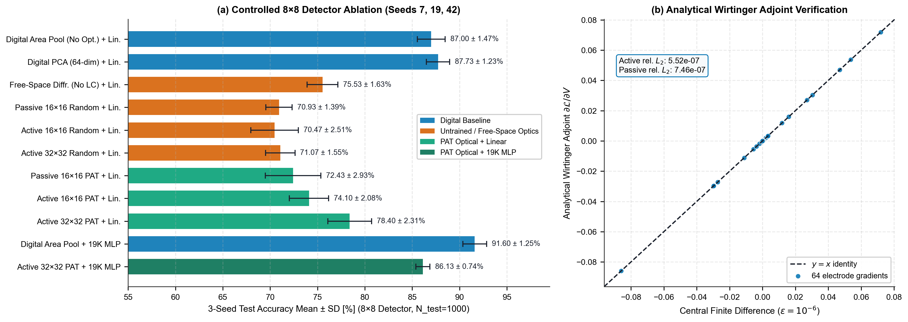
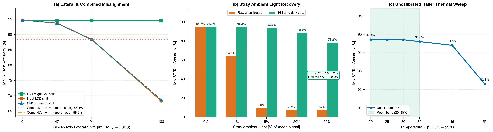
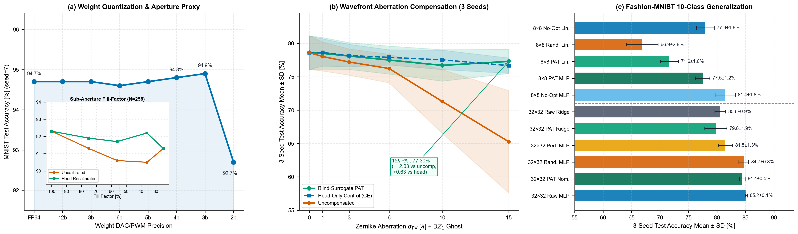

In modern CMOS and GPU accelerators, 60% to 90% of total inference energy is spent moving weights and activations across DRAM and interconnect hierarchies rather than performing multiply-accumulate arithmetic [1], [2]. Free-space and integrated optical computing architectures address this data-movement bottleneck in the analog domain: as an optical field propagates through structured diffractive or phase-modulating elements, spatial superposition executes dense linear transformations passively during its sub-nanosecond transit across a centimeter-scale cavity (~0.33 ns across a 10 cm optical path) [3]–[5].
Static 3D-printed diffractive deep neural networks (D²NN) established passive inference at terahertz wavelengths [5], yet fixed dielectric plates cannot be reprogrammed after fabrication. Subsequent reconfigurable systems introduced nanophotonic Mach–Zehnder meshes [6], large-scale diffractive processing units [7], integrated photonic tensor cores [8], time-wavelength interleaving [9], and hybrid optical-electronic convolutional front-ends [10]. Parallel efforts dating back to pocket liquid-crystal televisions [11] and recent spatial-light vector-matrix multipliers [12] demonstrated that display hardware can serve as programmable optical weights.
Three engineering barriers still hinder accessible experimental adoption: laboratory liquid-crystal-on-silicon (LCOS) spatial light modulators cost $8,000–$40,000 per plane; dual-arm interferometers experience destructive fade under nanometer path shifts (λ/4 ≈ 133 nm at 532 nm) [6]; and weights trained on idealized numerical models lose accuracy when deployed onto misaligned optical hardware, an effect worsened when designers overlook RMS voltage clamping in passive-matrix liquid-crystal cells.
This article presents a numerical design and wave-optics simulation study of ZERRE (Model H), an open-source common-path optoelectronic processor architecture and digital twin; no physical benchtop prototype has been constructed or optically measured at this stage. Starting from volumetric bulk scattering bounds in nematic liquid crystals [13], eight candidate topologies (Models A–H) are winnowed down to a planar 7 μm thin-cell stack built from commodity monochrome mSLA 2K displays ($40–$60 each). Applying the Alt–Pleshko multiplexing theorem [14] shows that 16×16 passive-matrix scanning (1/5 voltage bias) restricts the RMS selection ratio to 1.290994 and shrinks usable E7 phase retardation by 5.28× (4.86 rad to 0.921 rad), motivating an active-matrix TFT-LCD or direct AC-PWM weight plane. Finally, deriving exact analytical Wirtinger-adjoint gradients through Angular Spectrum propagation enables Physics-Aware Training (PAT) [15], [16] on a perturbed physical plant simulator, audited across three random seeds on MNIST and Fashion-MNIST alongside mechanical, thermal, stray-light, bit-quantization, sub-aperture fill-factor, and Zernike aberration stress tests.

Among eight evaluated conceptual topologies (Models A–H), four volumetric nematic-reservoir designs (32-electrode Fibonacci sphere Model A, hemispherical hybrid bowl Model C, photodiode-addressed sphere Model F, and spherical ITO matrix Model G) investigated filling centimeter-scale borosilicate vessels (Ø100 mm) with Merck E7 to induce three-dimensional optical mixing. In nematic mesophases, however, thermal fluctuations of the molecular director generate Rayleigh–Gans scattering roughly two orders of magnitude stronger than intrinsic absorption, producing attenuation coefficients of αscat ≈ 15–40 dB/cm across the visible spectrum [13]. Across an L = 10 cm optical path inside a spherical cell, ballistic attenuation reaches 150–400 dB, extinguishing wavefront coherence into diffuse photon transport and rendering the director field unstable under mechanical sloshing.
By contrast, confining E7 inside a planar gap of d ≤ 7 μm reduces bulk scattering loss to 0.003–0.03 dB while capillary forces immobilize the fluid layer. At λ = 532 nm, a 7 μm layer of pure E7 (Δn = 0.225) imparts an unbiased phase retardation of 18.60 rad (≈ 5.92π), spanning multiple interference orders. A monotonic, single-order working window of
is realized either with fluorinated nematic mixtures native to mSLA TFT panels (Δneff ≈ 0.060 at d = 7 μm), a thinner d = 1.87 μm pure E7 gap, or a 7 μm E7 cell biased above 2.2 V RMS. Among the remaining planar thin-cell candidates, a passive 16×16 ITO plate (Model B) encounters the multiplexing limit analyzed in Section II-C, a single 7-layer stack (Model D) defines the 7 μm cell cross-section, and a 3-layer cascaded stack (Model E) compounds insertion loss and alignment tolerances, leaving the single-weight-plane common-path stack (Model H) as the minimal realizable synthesis. Any future exploratory test of thick-cell scattering is gated by a low-cost 1 cm glass cuvette transmission check prior to spherical fabrication.
Mass-produced monochrome LCD panels built for masked stereolithography (mSLA) 3D printers offer a practical alternative to research LCOS modulators. Typical units offer 1440×2560 pixels on a 5.5-inch panel (~47 μm pitch, with 1620×2560 resolution on ~6.1-inch displays), omit absorptive RGB color filters, ship without a backlight as bare transmissive valves, and interface with standard HDMI-to-MIPI driver boards at 60 Hz (8-bit grayscale) for $40–$60. Although thin-film transistor (TFT) bus lines restrict clear aperture transmittance to roughly 4%–8%, a 100 mW 532 nm diode-pumped solid-state (DPSS) laser paired with millisecond camera exposure easily compensates for this loss, while the 16.7 ms frame refresh outpaces the ~50 ms viscoelastic relaxation time of E7.

Addressing an N×N ITO grid using 2N row-and-column channels via time multiplexing (for instance, a 1/5 voltage bias scheme for N = 16) appears economical at first glance. Because the electro-optic dielectric torque in a nematic LC scales quadratically with electric field (∝ E²) and integrates over a ~50 ms response time, each cell reacts to the root-mean-square voltage over the entire scan period rather than instantaneous row pulses:
where Urj ∈ [−1, +1] denotes normalized column weights. Under optimal drive ratio Vsel/Vdata = √N (= 4 for N = 16), the Alt–Pleshko theorem [14] bounds the maximum RMS selection ratio to
For N = 16 multiplexed rows, this ceiling equals √(5/3) ≈ 1.290994 (dropping further to 1.195606 at N = 32). Holding unselected elements near the 1.00 V Freedericksz threshold caps selected pixels at 1.291 V RMS, reducing usable E7 phase modulation from 4.86 rad down to 0.921 rad (5.28× loss, Fig. 2a) while introducing vertical column crosstalk through the summation in Eq. (2). Model H therefore replaces passive row scanning in the weight plane with either direct AC-coupled PWM channels or a second commodity active-matrix TFT mSLA panel, whose pixel-level storage capacitors eliminate column crosstalk.
Linearly polarized (0°) 532 nm light modulated in amplitude by the input mSLA panel forms E0(x,y) = A(x,y) and propagates across free space Z1 = 5 cm via the non-paraxial scalar Angular Spectrum Method (ASM) [17]:
where evanescent spatial frequencies are truncated. At the weight plane, our analytical model treats each pixel as a parallel-aligned electrically controlled birefringence (ECB) retarder oriented at 45° between crossed polarizers (0°/90°). Up to an overall global phase, its scalar Jones transmittance is
producing E2 = 𝒫Z2{E1 ⊙ M(V)} across Z2 = 5 cm and square-law sensor intensity ICMOS = |E2|², which is block-averaged over a centered K×K detector grid into f ∈ ℝK² (Fig. 1). Notice that Δφ(V) follows a piecewise-linear electro-optic curve falling monotonically from 4.97 rad at 1.00 V to 0.11 rad at 5.00 V (4.86 rad full span; 4.64 rad within the PAT active bounds [1.05, 4.95] V), whereas the intensity factor |t(V)|² = sin²(Δφ/2) is non-monotonic and peaks at Δφ = π (Fig. 2a). Here Eq. (6) acts as a closed-form coupled amplitude–phase surrogate for commercial twisted-nematic (TN) mSLA displays [18]; physical assembly using a TN weight panel requires aligning its polarizers appropriately and empirically calibrating its voltage–Jones curve. Forward and adjoint FFT propagations during PAT execute in complex64 precision, whereas non-PAT analytical sweeps and evaluation paths run in complex128.
With pixel pitch Δx = 47 μm, the critical ASM sampling dimension is Ncrit = λZ1/Δx² ≈ 12.0 pixels, so an N = 128 (or 256) grid satisfies Nyquist sampling by more than an order of magnitude. Maximum diffraction walk-off across Z1 is Z1λ/(2Δx) = 0.283 mm, well within the zero-padded spatial guard bands of 1.69 mm around the 2.63 mm input digit and 0.75 mm around the 4.51 mm active weight array at N = 128 (2.73 mm and 1.50 mm at N = 256), suppressing circular wrap-around aliasing.
To differentiate a scalar task loss ℒ with respect to the control voltages V without finite-difference evaluations across hundreds of electrodes, the complex Wirtinger error field at the sensor plane for I = E2E2* is written as
Under the discrete real inner product ⟨u, v⟩ = Re ∑ u*v, the exact Hermitian adjoint of ASM propagation is backward propagation by −Z2:
Integrating Gt,ij = ∑(u,v)∈Ωij E1*(u,v) Gmask(u,v) over each electrode macro-pixel Ωij and applying dt/dφ = (1/2)eiφ yields the exact closed-form voltage gradient in one inverse-and-forward FFT pair:
Against central finite differences (ε = 10−6), Eq. (9) agrees to a relative L2 error of 5.52×10−7 in active mode and 7.46×10−7 under the passive Alt–Pleshko RMS chain rule (Fig. 3b).

Because physical optical builds exhibit uncalibrated mounting offsets, temperature shifts, and readout noise, our Physics-Aware Training (PAT) loop [15] evaluates forward sensor features fphys using a perturbed physical plant simulator while computing optical backward steps via Eqs. (7)–(9) on the uncalibrated nominal digital twin (retaining Simultaneous Perturbation Stochastic Approximation, SPSA [19], as a gradient-free fallback). Under ambient stray light, near-zero-variance peripheral CMOS pixels can blow up by orders of magnitude during z-score normalization. We suppress this instability by subtracting a 16-frame noisy dark background estimate and enforcing a training-only standard-deviation floor:
where μtr and σtr are computed strictly from the training split without test-set leakage.
| Parameter | Value / Specification |
|---|---|
| Wavelength λ / Pixel pitch Δx | 532 nm / 47 μm |
| Axial spacings Z1, Z2 | 50 mm, 50 mm (10 cm path, 0.33 ns) |
| Grid sizes N | 128×128 (6.02 mm), 256×256 (12.03 mm) |
| ASM critical grid / Walk-off | Ncrit = 12.0 px / 0.283 mm |
| Zero-pad guard bands (N = 128) | 1.69 mm (input), 0.75 mm (weight) |
| Active / Passive control bounds | [1.05, 4.95] V (4.64 rad) / [−1, +1] (0.921 rad) |
| Optimizer | Adam (lropt = 0.07–0.10; lrhead = 2.5×10−2 / 2.5×10−3) |
| Regularization / Schedule | 10−4 L2; 16–22 ep. (PAT), 40–45 ep. (MLP); early stop |
| Perturbed plant faults | 47 μm LCD/CMOS, +1.2/−0.8 mm Z, 29 °C, 2% drift |
| Evaluation seeds / Test count | {7, 19, 42} / Ntest = 1000 per split |
All numerical experiments were executed in Python 3.11.9 / NumPy 2.2.3 on CPU (Intel64 Family 6 Model 170) using complex64 propagation in PAT paths and complex128 in non-PAT/evaluation paths under the hyperparameters summarized in Table I. To isolate what programmable optical weights contribute when electronic readout bandwidth is severely constrained, we benchmarked 11 matched configurations over an 8×8 = 64 detector grid on MNIST [20] across three random seeds (Nfit = 2640, Nval = 360, Ntest = 1000). The plant simulator included 47 μm lateral LCD and sensor shifts, +1.2 mm/−0.8 mm axial spacing errors, a 29 °C Haller thermal birefringence drift [21], [22], 2% laser gain drift, and Gaussian readout noise, all unknown to the surrogate twin (Table II, Fig. 3a).
| # | Architecture / Configuration | Opt. W | Dig. W | Test (%) |
|---|---|---|---|---|
| 1 | Digital Area Pooling (8×8) + Linear | 0 | 650 | 87.00 ± 1.47 |
| 2 | Digital PCA Basis (64-dim) + Linear | 0 | 650ᵃ | 87.73 ± 1.23 |
| 3 | Free-Space Diffraction Only (No LC) | 0 | 650 | 75.53 ± 1.63 |
| 4 | Passive 16×16 Random + Linear | 256 | 650 | 70.93 ± 1.39 |
| 5 | Active 16×16 Random + Linear | 256 | 650 | 70.47 ± 2.51 |
| 6 | Active 32×32 Random + Linear | 1,024 | 650 | 71.07 ± 1.55 |
| 7 | Passive 16×16 + PAT + Linear | 256 | 650 | 72.43 ± 2.93 |
| 8 | Active 16×16 + PAT + Linear | 256 | 650 | 74.10 ± 2.08 |
| 9 | Active 32×32 + PAT + Linear | 1,024 | 650 | 78.40 ± 2.31 |
| 10 | Digital Area Pooling (8×8) + MLP | 0 | 19,210 | 91.60 ± 1.25 |
| 11 | Active 32×32 + PAT + MLP | 1,024 | 19,210 | 86.13 ± 0.74 |
Two clear trends emerge from Table II. First, unoptimized diffraction degrades accuracy sharply relative to direct imaging onto an 8×8 pixel sensor (70.47%–71.07% vs. 87.00%) because free-space divergence spreads localized strokes across coarse pixels. Optimizing the 32×32 active LC weights with PAT recovers +7.33 percentage points over matched 32×32 random optics (71.07% → 78.40%) and +2.87 points over bare free-space propagation (75.53%). By contrast, at 16×16 optical resolution, passive PAT (72.43 ± 2.93%) and active PAT (74.10 ± 2.08%) are statistically equivalent within one standard deviation because the 8×8 readout remains bottlenecked by detector rank rather than phase stroke. Second, a single programmable diffractive layer operating on positive square-law intensity still lags behind direct electronic 8×8 area pooling (78.40% vs. 87.00%, and 86.13% vs. 91.60% with a 19K-parameter MLP), while a data-driven linear PCA-64 projection sets the unconstrained linear ceiling at 87.73 ± 1.23%. Single-plane optics learns a task-aligned spatial kernel relative to random wave mixing, but does not outcompute noiseless digital spatial pooling by itself.
Scaling the CMOS detector grid to 32×32 (1,024 pooled features) reveals how optical and electronic capacities interact across both MNIST [20] and 10-class Fashion-MNIST [23] (Table III). With a regularized Ridge linear readout (α selected on a held-out validation split) at Ntrain = 6000, a fixed random 32×32 optical mask is statistically indistinguishable from raw 28×28 digital pixels on MNIST (85.97 ± 2.05% vs. 85.43 ± 1.36%), whereas PAT-trained 32×32 Ridge on Fashion-MNIST is marginally below raw digital pixels (79.80 ± 1.93% vs. 80.57 ± 0.95%).
| Configuration | Opt. W | Dig. W | MNIST (%) | F-MNIST (%) |
|---|---|---|---|---|
| Raw 28×28 Digital Ridge (N=6k) | 0 | 7,850 | 85.43 ± 1.36 | 80.57 ± 0.95 |
| Opt. 16×16, 256f Ridge (N=2.5k) | 256 | 2,570 | 81.90 ± 1.08 | — |
| Opt. 16×16, 1024f Ridge (N=2.5k) | 256 | 10,250 | 84.13 ± 1.22 | — |
| Opt. 32×32 Rand., 1024f Ridge (N=6k) | 1,024 | 10,250 | 85.97 ± 2.05 | — |
| Opt. 32×32 PAT, 1024f Ridge (N=6k) | 1,024 | 10,250 | — | 79.80 ± 1.93 |
| Raw 28×28 Digital MLP (N=6k) | 0 | 203,530 | 93.93 ± 0.99 | 85.17 ± 0.15 |
| 32×32 Random Optics + MLP | 1,024 | 264,970 | 94.20 ± 0.95 | 84.70 ± 0.85 |
| 32×32 PAT + MLP (Perturbed) | 1,024 | 264,970 | 91.07 ± 1.90 | 81.47 ± 1.27 |
| 32×32 PAT + MLP (Nominal twin, upper bound) | 1,024 | 264,970 | 94.67 ± 0.55 | 84.43 ± 0.51 |
Once a 1024→256→10 ReLU MLP (264,970 digital weights) is attached, electronic capacity dominates classification accuracy: the nominal-twin PAT upper bound (94.67% MNIST, 84.43% Fashion-MNIST), random fixed optics with an MLP (94.20%, 84.70%), and raw digital pixels with an MLP (93.93%, 85.17%) all converge within ~0.5 percentage points. Under the uncompensated perturbed plant simulator, PAT MLP scores 91.07 ± 1.90% on MNIST and 81.47 ± 1.27% on Fashion-MNIST. Conversely, in the detector-constrained 8×8 Fashion-MNIST regime (Fig. 5c), PAT linear classification yields +4.76 points over matched random optics (71.63 ± 1.59% vs. 66.87 ± 2.80%), reaching 77.50 ± 1.25% with a 19K MLP versus 77.93 ± 1.57% (linear) and 81.43 ± 1.78% (MLP) for direct 8×8 digital pooling; thus the optical layer trails even the linear digital baseline in this regime.

In a common-path cavity without an external reference arm, axial intensity tolerance scales with the Talbot distance zT = 2Δx²/λ ≈ 8.3 mm. Evaluated on 1,000 MNIST test digits (seed 7, nominal base 94.7%, Fig. 4a), shifting the LC weight panel laterally up to 188 μm incurs only 0.2 points loss (94.7% → 94.5%) because incident optical fields are spatially smooth. Input LCD and CMOS sensor shifts exhibit steeper sensitivity beyond 47 μm (93.7% at 47 μm, 68.3% and 68.7% at 188 μm), whereas axial shifts ΔZ1 ∈ [0, 8 mm] remain within 94.3%–94.7%. Applying 47 μm lateral shifts on all planes plus +1 mm axial offset lowers nominal-head accuracy to 88.4% (−6.3 points), while a head trained directly under plant perturbations holds 88.9% relative to its 89.0% baseline (−0.1 points).
Modeling E7 birefringence via the Haller power law [21], [22]:
uncalibrated classification stays between 94.4% and 94.7% across 20–45 °C, dipping to 92.3% at 55 °C near the clearing point (Fig. 4c). Without background subtraction, stray ambient light totaling 1% or 5% of mean signal drops accuracy to 64.1% and 9.8%. Subtracting a 16-frame noisy dark-frame estimate alongside Eq. (10) maintains 94.4% at 1%, 93.7% at 5%, 88.2% at 20%, and 78.2% at 50% ambient leakage, and restores a combined 30 °C + 1% leakage + 2% laser drift fault from 64.4% to 95.0%. Laser power variations across ±10% stay within 94.2%–94.9%.

Three further simulation checks test assumptions prior to benchtop fabrication (Fig. 5a–b). Under post-training quantization of an 8-bit HDMI input coupled with b-bit LC control voltages (seed 7), accuracy remains constant at 94.6%–94.9% down to 4 bits (16 voltage levels), slipping to 92.7% at 2 bits. Simulating a macro-pixel sub-aperture fill-factor proxy from 100% down to 25% (N = 256 fine grid, leakage-free gain scaling) reduces uncalibrated accuracy slightly from 92.3% to 91.3%, while recalibrating only the digital readout head yields the same 91.3% in this range.
Introducing fifth-order Zernike substrate wavefront aberrations (0–15λ peak-to-valley across defocus, astigmatism, coma, spherical aberration, and float-glass ripple) plus a 3Z1 Fabry–Pérot ghost (0.04 Fresnel field amplitude) reveals a nuanced comparison when all conditions share identical cross-entropy Adam readout optimization (Fig. 5b). Across 1λ to 10λ, recalibrating the linear head with frozen optical weights recovers nearly all uncompensated loss (78.03% → 78.63% at 1λ; 71.30% → 77.53% at 10λ), performing comparably to blind-surrogate PAT (78.50% and 76.70%). At severe 15λ distortion, uncompensated deployment falls to 65.27 ± 7.67%, head recalibration alone reaches 76.67 ± 1.15%, and joint optical adaptation via PAT attains 77.30 ± 1.82% (a +0.63-point gap that stays within one combined standard deviation and should therefore be read as a marginal trend rather than superiority). A harder regime beyond parametric perturbation was also tested: a structural model-mismatch plant carrying a ±10% perturbed LC transfer curve, 0.90 camera gamma, and multiplicative speckle (none of which exist in the surrogate's physics). Under the same 8×8 MNIST protocol, uncalibrated ideal weights score 71.30 ± 1.08%, matched head-only recalibration 79.13 ± 2.39%, and blind-surrogate PAT 76.80 ± 1.65%: PAT recovers most of the uncalibrated loss but, surprisingly, trails head-only recalibration in this regime.
| Subsystem | Selected Hardware | Cost (USD) |
|---|---|---|
| Optical Input | 532 nm DPSS (100 mW) + Expander + mSLA LCD | 150 |
| Active Weights | 2nd mSLA TFT-LCD (or ITO Cell + AC-PWM) | 90–230 |
| Readout & Host | RPi Camera 3 (IMX708, 12 MP) + M12 + RPi 5 | 125 |
| Optomechanics | Optical Rail, Mounts, Dark Box, 532 nm Filter | 262 |
| Subtotal | Core optical and electronic components | 627–767 |
| Total (+25%) | Complete benchtop prototype w/ contingency | 784–959 |
Component pricing for a modular optical rail build is itemized in Table IV, totaling $627–$767 in direct hardware or $784–$959 including a 25% contingency margin. Three practical timescales govern such a system and must be clearly separated: passive coherent wave propagation across 10 cm of optics takes ~0.33 ns; benchtop image-by-image throughput would be paced electronically by the 60 Hz LCD/camera frame interval (~16.7 ms) during inference and by the ~50 ms nematic relaxation time during weight updates; and our uncompiled NumPy CPU ASM simulator runs at a warmed median time of 1.04 ms per digit (N = 128², Intel64 Family 6 Model 170 CPU, Python 3.11.9 / NumPy 2.2.3, mean 1.27 ms, IQR 0.63 ms, range 0.84–2.23 ms across 50 runs).
Benchtop construction introduces several engineering requirements omitted from simplified 2D models. First, a Raspberry Pi Camera Module 3 (IMX708 sensor area 6.45 × 3.63 mm) is slightly smaller along its minor axis than the 4.51–6.02 mm diffracted field, necessitating a ~1.6× demagnifying M12 relay lens pair. Second, a 100 mW 532 nm DPSS laser is a Class 3B source requiring OD 4+ protective eyewear, a light-tight matte enclosure, and an infrared-cut filter to reject unabsorbed 808 nm and 1064 nm pump leakage. Third, commodity PCA9685 PWM driver boards emit unipolar pulses that induce electrochemical degradation across bare ITO electrodes unless buffered by an AC polarity-inversion circuit, reinforcing our selection of an active TFT display backplane.
Eight principal limitations qualify these numerical findings and define the remaining engineering work before physical claims can be made. First, all classification accuracies and fault tolerances originate from wave-optics simulations; benchtop fabrication, optical alignment, and empirical detector noise measurements remain future work. Second, on 8×8 detectors with a strictly matched readout head and training protocol, PAT-trained optics beats matched random optics by +7.33 points yet still underperforms direct digital area pooling by 8.60 points (78.40% vs. 87.00%); when a 265K-parameter MLP head is attached at 32×32, electronic capacity compresses the gap to random optics within ~0.5 points.
Third, Eq. (6) models a parallel ECB retarder as an analytical proxy, whereas twisted-nematic mSLA panels exhibit coupled polarization rotation [18] that demands empirical lookup characterization. Fourth, our scalar simulations assume monochromatic, spatially uniform illumination, omitting DPSS laser speckle, finite coherence length, and multi-plane inter-reflections beyond the simulated 0.04 Fabry–Pérot ghost. Fifth, each 32×32 weight block groups dozens of native 47 μm mSLA sub-pixels, so our N = 256 sub-aperture fill-factor test serves only as a scaled proxy rather than resolving the physical panel over a multi-thousand-pixel grid. Sixth, the default perturbed plant shares the same scalar-ASM physics class as the surrogate, i.e., it probes parameter perturbations (shifts, temperature, drift, noise) rather than structural model error; we therefore added a structural-mismatch variant (perturbed LC curve, camera gamma, multiplicative speckle) and report PAT's behavior in that harsher regime in Section IV. Seventh, on physical hardware every PAT forward pass requires an LCD/camera acquisition cycle (~16.7 ms per sample at 60 Hz), so an epoch over thousands of images would take minutes to hours rather than milliseconds of simulation; the PAT gains reported here demonstrate feasibility, not a practical online-training speed. Finally, all multi-seed comparisons use only three seeds and fixed train/test subsets, and weights tuned for one perturbed cell do not transfer directly to another cell with distinct alignment and cell-gap variations unless paired with calibration-robust objectives such as Sharpness-Aware Training [24].
Starting from bulk nematic Rayleigh–Gans attenuation (15–40 dB/cm) and Alt–Pleshko RMS voltage limits (5.28× swing loss on 16-row passive grids), this study synthesized the planar common-path ZERRE (Model H) architecture around commodity mSLA panels within a $784–$959 prototype estimate. An exact Wirtinger-adjoint operator through scalar ASM diffraction enabled Physics-Aware Training under unmodeled mechanical, thermal, ambient-light, and aberration faults, raising 8×8 linear MNIST accuracy by +7.33 points over matched random optics (78.40%) yet remaining 8.60 points below direct digital area pooling (87.00%). At 32×32 hybrid readout, the nominal-twin upper bound reaches 94.67% MNIST and 84.43% Fashion-MNIST (perturbed plant: 91.07% and 81.47%), statistically indistinguishable from random-optics MLP at 94.20%, meaning the optical layer's computational contribution is not measurable in this regime. The study therefore stands as a design-feasibility assessment that clearly delineates where optical weighting adds value and identifies concrete benchtop calibration steps ahead.
All Python wave-optics simulation scripts (zerre_twin.py, zerre_pat_torch.py), the interactive WebGL/ASM visualizer (start_server.py), automated physics unit tests (tests/test_zerre_physics.py), 3-seed benchmark outputs (makale/scripts/paper_results.json), and figure/manuscript generation scripts are openly released under the MIT License (code) and CC BY 4.0 License (manuscript text and figures), alongside local caching support for standard MNIST and Fashion-MNIST datasets, at https://github.com/hamzasolak/zerre (release tag v0.5.0; Author ORCID: 0009-0004-7541-9620).
This work was conducted as independent research without external institutional or commercial grant funding.
The author declares no conflicts of interest.
Generative AI assistance (Gemini and Claude) was used for prose editing, LaTeX formatting, and code-audit verification across Sections I–VI; the author conceived the physical design, wrote and verified the wave-optics simulation code, executed all multi-seed benchmarks, and takes full responsibility for all scientific claims and results.